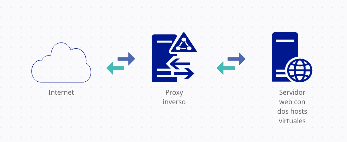
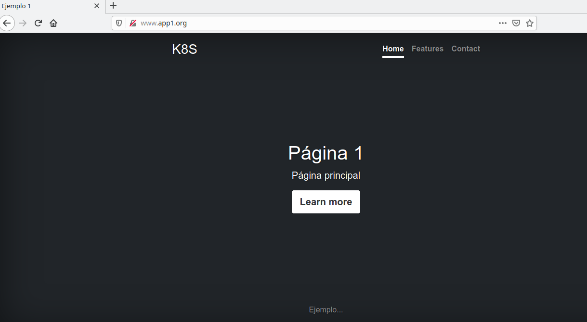
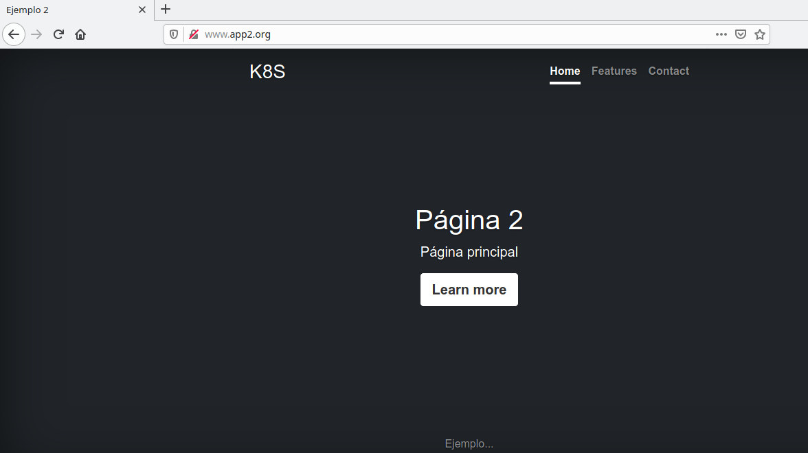
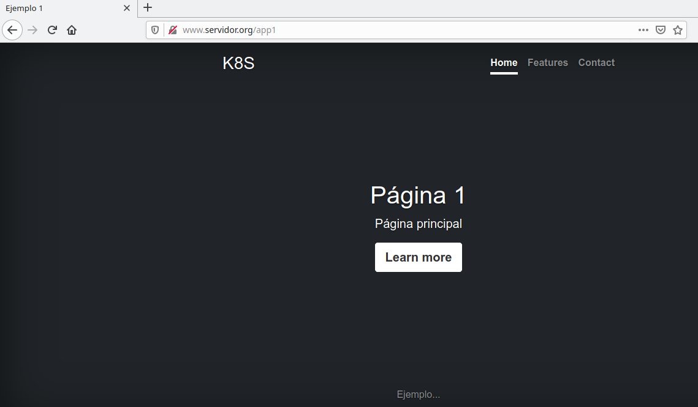
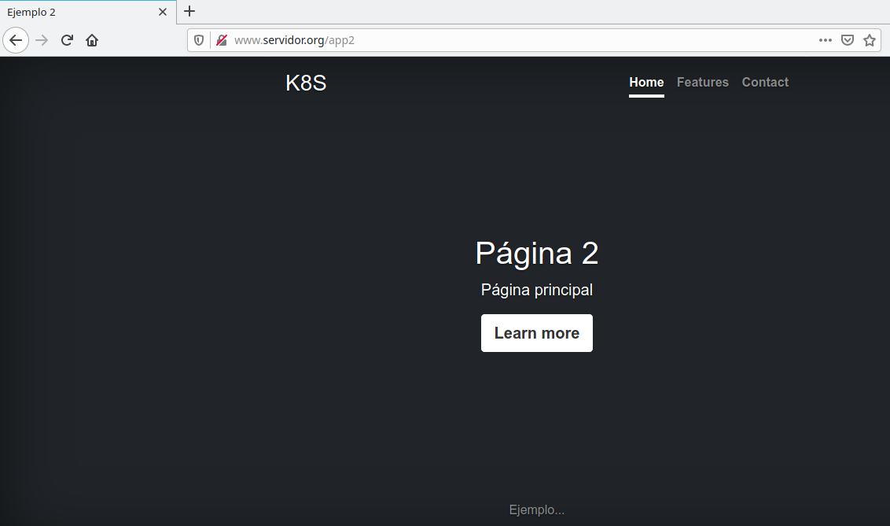

¿Qué es un servidor proxy?
Podemos describirlo como un intermediario entre los servicios que ofrecemos e Internet, aportándonos así una mayor seguridad, privacidad y rendimiento, dependiendo del uso que queramos darle. Al emplearlo junto con uno o varios servidores web, todas las peticiones que hagan los clientes pasarán primero por el proxy, que irá repartiendo dichas peticiones entre los diferentes servidores o servicios.

Si eso es lo que hace un proxy, ¿por qué no mandar las peticiones directamente al servidor web?
Pues porque los servidores proxy modernos hacen mucho más que redirigir peticiones:
- Actúan como un cortafuegos, filtrando las peticiones web.
- Permiten conectar redes distintas.
- Guardan los datos en caché para aligerar el proceso de redirección.
 Y además, ofrecen un alto grado de privacidad.
Y además, ofrecen un alto grado de privacidad.
Bien, pero lo que vamos a usar en este caso es un proxy inverso (reverse proxy), un tipo de proxy que recibe las peticiones del cliente, y en vez de redirigirlas, manda esas peticiones al servidor correspondiente como si el proxy fuera el propio cliente, recibiendo también las respuestas del servidor.
¿En qué se diferencia un proxy inverso del proxy de reenvío?
Lo que diferencia a un proxy inverso de un proxy de reenvío es su posición en el escenario de red.
- El proxy de reenvío se sitúa en primera línea, delante de los clientes, evitando que los servidores se comuniquen directamente con dichos clientes.
- Por otro lado, el proxy inverso se sitúa delante de los servidores, evitando que los clientes se comuniquen directamente con dichos servidores.
Una vez aclarada la teoría, ya podemos comenzar a instalar y configurar el proxy inverso.
Creación del escenario
El escenario sobre el que vamos a poner en marcha un proxy inverso se compone de dos máquinas:
- El servidor proxy, conectado al exterior y a red interna.
- El servidor web, conectado a la red interna, y donde tenemos instalado Apache2 con dos hosts virtuales. Al encontrarse en la red interna, entendemos que no se puede acceder directamente al servidor web desde el exterior.

El primer paso será instalar Apache2 en la máquina proxy:
apt install apache2
Configuración del proxy para acceder a las páginas del servidor
Acceso a la primera página con la URL www.app1.org y a la segunda con la URL www.app2.org
Para empezar, en la máquina del proxy habilitamos los módulos proxy y proxy_html:
sudo a2enmod proxy proxy_http
Después, creamos un virtualhost por cada página:
- Configuración de la página 1:
<VirtualHost *:80>
ServerName www.app1.org
ProxyPass / "http://interno.example1.org"
ProxyPassReverse / "http://interno.example1.org"
</VirtualHost>
- Configuración de la página 2:
<VirtualHost *:80>
ServerName www.app2.org
ProxyPass / "http://interno.example2.org"
ProxyPassReverse / "http://interno.example2.org"
</VirtualHost>
La directiva ProxyPass permite mapear los servidores web. En este caso, cuando accedamos a la URL www.app1.org, el proxy le mandará la petición al primer virtualhost (http://interno.example1.org) del servidor web; si accedemos a la URL www.app2.org, el proxy le mandará la petición al segundo virtualhost (http://interno.example2.org) del servidor web.
La directiva ProxyPassReverse la añadiremos cuando estemos usando un proxy inverso, y tendrá los mismos valores especificados en la directiva ProxyPass. Permite redirigir las respuestas del servidor web cambiando la URL en las cabeceras Location, Content-Location y URI.
A continuación, activamos ambos hosts virtuales en Apache2:
sudo a2ensite app1.conf
sudo a2ensite app2.conf
Reiniciamos el servicio y añadimos en el fichero /etc/hosts/ de la máquina anfitrión la ip del proxy y los nuevos dominios:
192.168.121.217 www.app1.org www.app2.org
Mientras que el fichero /etc/hosts del proxy tendrá la resolución estática para acceder a las páginas del servidor:
10.0.0.6 interno.example1.org interno.example2.org
Cuando accedemos a dichos dominios desde el anfitrión, nos aparecerán las páginas del servidor:


Acceso a la primera página con la URL www.servidor.org\app1 y a la segunda con la URL www.servidor.org\app2
En lugar de tener dos hosts virtuales, tendremos solo uno con la siguiente configuración:
<VirtualHost *:80>
ServerName www.servidor.org
<Location "/app1">
ProxyPass "http://interno.example1.org"
ProxyPassReverse "http://interno.example1.org"
</Location>
<Location "/app2">
ProxyPass "http://interno.example2.org"
ProxyPassReverse "http://interno.example2.org"
</Location>
</VirtualHost>
Activamos el nuevo virtualhost y recargamos Apache2:
sudo a2ensite servidor.conf
sudo systemctl reload apache2
Reiniciamos el servicio y añadimos en el fichero /etc/hosts/ de la máquina anfitrión el nuevo dominio, aprovechando la IP que pusimos antes:
192.168.121.217 www.app1.org www.app2.org www.servidor.org
Finalmente, podremos acceder desde el anfitrión a los directorios del nuevo virtualhost:

